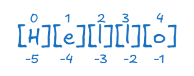
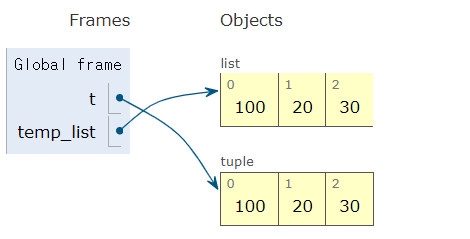
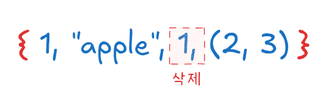

# 빈 리스트 생성
empty_list = []
print(empty_list) # [][]리스트(list)는 여러 개의 값을 순차적으로 저장할 수 있는 자료형으로, 대괄호([])를 사용하여 생성한다. 리스트는 변경 가능한(mutable) 객체(뮤터블과 이뮤터블 참고)이며, 다양한 자료형의 값을 함께 저장할 수 있다.
리스트는 대괄호, 리스트 생성자 함수 list() 등을 통해 생성할 수 있다.
대괄호 []를 사용하여 리스트를 생성할 수 있다.
# 빈 리스트 생성
empty_list = []
print(empty_list) # [][]# 정수 리스트
numbers = [1, 2, 3, 4, 5]
print(numbers) # [1, 2, 3, 4, 5][1, 2, 3, 4, 5]# 문자열 리스트
fruits = ["apple", "banana", "cherry"]
print(fruits) # ['apple', 'banana', 'cherry']['apple', 'banana', 'cherry']# 여러 자료형이 포함된 리스트
mixed = [1, "hello", 3.14, True]
print(mixed) # [1, 'hello', 3.14, True][1, 'hello', 3.14, True]list() 생성자를 사용하여 리스트를 만들 수 있다.
# 빈 리스트 생성
empty_list = list()
# 문자열을 리스트로 변환
char_list = list("hello")
print(char_list) # ['h', 'e', 'l', 'l', 'o']['h', 'e', 'l', 'l', 'o']# 튜플을 리스트로 변환
tuple_list = list((1, 2, 3))
print(tuple_list) # [1, 2, 3][1, 2, 3]# 집합(set)을 리스트로 변환
set_list = list({4, 5, 6})
print(set_list) # [4, 5, 6] (집합은 순서가 없으므로 순서가 달라질 수 있음)[4, 5, 6]리스트 컴프리헨션((List Comprehension)을 사용하면 반복문을 활용하여 리스트를 한 줄로 생성할 수 있다.
# 1~10까지의 숫자를 포함하는 리스트
numbers = [x for x in range(1, 11)]
print(numbers) # [1, 2, 3, 4, 5, 6, 7, 8, 9, 10][1, 2, 3, 4, 5, 6, 7, 8, 9, 10]# 제곱수를 포함하는 리스트
squares = [x**2 for x in range(1, 6)]
print(squares) # [1, 4, 9, 16, 25][1, 4, 9, 16, 25]# 짝수만 포함하는 리스트
evens = [x for x in range(1, 11) if x % 2 == 0]
print(evens) # [2, 4, 6, 8, 10][2, 4, 6, 8, 10]range()를 이용하여 연속적인 숫자로 구성된 리스트를 만들 수 있다.
# 0부터 9까지의 숫자를 포함하는 리스트
numbers = list(range(10))
print(numbers) # [0, 1, 2, 3, 4, 5, 6, 7, 8, 9][0, 1, 2, 3, 4, 5, 6, 7, 8, 9]# 1부터 10까지의 리스트
numbers = list(range(1, 11))
print(numbers) # [1, 2, 3, 4, 5, 6, 7, 8, 9, 10][1, 2, 3, 4, 5, 6, 7, 8, 9, 10]# 1부터 10까지의 홀수 리스트
odds = list(range(1, 11, 2))
print(odds) # [1, 3, 5, 7, 9][1, 3, 5, 7, 9]# 10부터 1까지 역순 리스트
reverse_numbers = list(range(10, 0, -1))
print(reverse_numbers) # [10, 9, 8, 7, 6, 5, 4, 3, 2, 1][10, 9, 8, 7, 6, 5, 4, 3, 2, 1]리스트 안에 리스트(Nested List)를 포함하여 2차원 이상의 리스트를 만들 수 있다.
# 2차원 리스트 생성
matrix = [
[1, 2, 3],
[4, 5, 6],
[7, 8, 9]
]
# 원소 접근
print(matrix[0]) # [1, 2, 3][1, 2, 3]print(matrix[1][1]) # 5 (두 번째 행, 두 번째 열)5리스트는 다양한 방법으로 생성할 수 있으며, 상황에 맞게 적절한 방식을 선택하여 활용할 수 있다.
리스트의 원소는 인덱스(index)를 사용하여 접근(Access)할 수 있다. 인덱스는 0부터 시작하며, 음수를 사용하면 뒤에서부터 접근할 수 있다.
리스트의 각 원소는 0부터 시작하는 인덱스(index)를 사용하여 접근(Indexing)할 수 있다.
numbers = [10, 20, 30, 40, 50]
# 양수 인덱스 접근
print(numbers[0]) # 10 (첫 번째 원소)10print(numbers[2]) # 30 (세 번째 원소)30print(numbers[4]) # 50 (다섯 번째 원소)50
음수 인덱스를 사용하면 뒤에서부터 원소를 접근(Negative Indexing)할 수 있다.
numbers = [10, 20, 30, 40, 50]
print(numbers[-1]) # 50 (마지막 원소)50print(numbers[-3]) # 30 (뒤에서 세 번째 원소)30print(numbers[-5]) # 10 (첫 번째 원소와 동일)10유효하지 않은 인덱스를 사용하면 IndexError가 발생한다.
numbers = [10, 20, 30]
print(numbers[5]) # IndexError: list index out of range--------------------------------------------------------------------------- IndexError Traceback (most recent call last) Cell In[23], line 2 1 numbers = [10, 20, 30] ----> 2 print(numbers[5]) # IndexError: list index out of range IndexError: list index out of range
리스트의 특정 구간을 가져올 때는 슬라이싱(slicing)을 사용한다.
numbers = [10, 20, 30, 40, 50, 60, 70]
# 기본 슬라이싱 [start:end] (end 인덱스는 포함되지 않음)
print(numbers[1:4]) # [20, 30, 40][20, 30, 40]# 처음부터 특정 인덱스까지
print(numbers[:3]) # [10, 20, 30][10, 20, 30]# 특정 인덱스부터 끝까지
print(numbers[4:]) # [50, 60, 70][50, 60, 70]# 전체 리스트 복사
print(numbers[:]) # [10, 20, 30, 40, 50, 60, 70][10, 20, 30, 40, 50, 60, 70]세 번째 값 step을 추가하면 특정 간격으로 원소를 가져올 수 있다.
numbers = [10, 20, 30, 40, 50, 60, 70]# 2칸씩 건너뛰기
print(numbers[::2]) # [10, 30, 50, 70][10, 30, 50, 70]# 3칸씩 건너뛰기
print(numbers[::3]) # [10, 40, 70][10, 40, 70]슬라이싱에서 step을 -1로 설정하면 리스트를 뒤집을 수 있다.
numbers = [10, 20, 30, 40, 50]
print(numbers[::-1]) # [50, 40, 30, 20, 10][50, 40, 30, 20, 10]리스트 안에 리스트가 포함된 경우 이중 인덱싱을 사용하여 원소를 접근할 수 있다.
matrix = [
[1, 2, 3],
[4, 5, 6],
[7, 8, 9]
]
# 첫 번째 행 전체
print(matrix[0]) # [1, 2, 3][1, 2, 3]# 두 번째 행의 두 번째 원소
print(matrix[1][1]) # 55# 세 번째 행의 마지막 원소
print(matrix[2][-1]) # 99반복문을 사용하여 리스트의 원소를 순회할 수 있다.
numbers = [10, 20, 30, 40, 50]
# 리스트의 모든 원소 출력
for num in numbers:
print(num)10
20
30
40
50인덱스와 값을 함께 가져오려면 enumerate()1를 사용할 수 있다.
enumerate(iterable, start=0) numbers = [10, 20, 30, 40, 50]
for index, value in enumerate(numbers):
print(f"Index {index}: {value}")Index 0: 10
Index 1: 20
Index 2: 30
Index 3: 40
Index 4: 50리스트의 원소는 인덱싱, 슬라이싱, 중첩 리스트 접근, 반복문을 활용하여 쉽게 접근할 수 있으며, 다양한 방식으로 조작할 수 있다.
리스트는 변경 가능한(mutable) 자료형이므로, 특정 인덱스의 값을 변경하거나 슬라이싱을 이용해 여러 개의 값을 한 번에 변경(Update)할 수 있다.
특정 인덱스의 값을 변경하려면 대입 연산자(=)를 사용한다.
numbers = [10, 20, 30, 40, 50]
# 인덱스 2의 값을 변경
numbers[2] = 100
print(numbers) # [10, 20, 100, 40, 50][10, 20, 100, 40, 50]# 마지막 원소 변경 (음수 인덱스 사용)
numbers[-1] = 500
print(numbers) # [10, 20, 100, 40, 500][10, 20, 100, 40, 500]유효하지 않은 인덱스를 사용하면 IndexError가 발생한다.
numbers = [10, 20, 30]
numbers[5] = 100 # IndexError: list assignment index out of range--------------------------------------------------------------------------- IndexError Traceback (most recent call last) Cell In[39], line 2 1 numbers = [10, 20, 30] ----> 2 numbers[5] = 100 # IndexError: list assignment index out of range IndexError: list assignment index out of range
슬라이싱을 사용하면 여러 개의 원소를 한 번에 변경할 수 있다.
numbers = [10, 20, 30, 40, 50]
# 1번 ~ 3번 인덱스의 값 변경
numbers[1:4] = [200, 300, 400]
print(numbers) # [10, 200, 300, 400, 50][10, 200, 300, 400, 50]슬라이싱을 이용하면 기존 리스트보다 더 적거나 많은 원소를 할당할 수도 있다.
numbers = [10, 20, 30, 40, 50]
# 두 개의 값을 하나로 변경
numbers[1:3] = [999]
print(numbers) # [10, 999, 40, 50][10, 999, 40, 50]# 두 개의 값을 네 개로 변경
numbers[2:4] = [1, 2, 3, 4]
print(numbers) # [10, 999, 1, 2, 3, 4][10, 999, 1, 2, 3, 4]+= 연산자를 사용하면 기존 리스트에 새로운 원소를 추가할 수 있다.
numbers = [10, 20, 30]
# 리스트 확장 (새로운 요소 추가)
numbers += [40, 50]
print(numbers) # [10, 20, 30, 40, 50][10, 20, 30, 40, 50]하지만 이 방법은 새로운 리스트를 생성하는 것이 아니라 기존 리스트를 확장하는 방식이므로 append()나 extend()와는 차이가 있다(리스트 원소 추가 참고).
리스트 컴프리헨션(list comprehension)을 사용하면 조건에 맞게 리스트의 원소를 한 번에 변경할 수 있다.
numbers = [1, 2, 3, 4, 5]
# 모든 원소를 제곱값으로 변경
numbers = [x**2 for x in numbers]
print(numbers) # [1, 4, 9, 16, 25][1, 4, 9, 16, 25]# 홀수만 두 배로 변경
numbers = [x*2 if x % 2 != 0 else x for x in numbers]
print(numbers) # [2, 4, 18, 16, 50][2, 4, 18, 16, 50]리스트를 반복하면서 특정 조건에 맞는 원소만 변경할 수도 있다.
numbers = [10, 20, 30, 40, 50]
# 값이 30 이상인 원소를 모두 0으로 변경
for i in range(len(numbers)):
if numbers[i] >= 30:
numbers[i] = 0
print(numbers) # [10, 20, 0, 0, 0][10, 20, 0, 0, 0]map()2 함수를 사용하면 리스트의 모든 원소를 변경할 수 있다.
numbers = [1, 2, 3, 4, 5]
# 모든 원소를 문자로 변환
numbers = list(map(str, numbers))
print(numbers) # ['1', '2', '3', '4', '5']['1', '2', '3', '4', '5']리스트 원소는 인덱스를 직접 지정하거나, 슬라이싱, 리스트 컴프리헨션, 반복문, map()을 이용하여 변경할 수 있다. 상황에 따라 적절한 방법을 선택하면 된다.
리스트는 변경 가능한(mutable) 자료형이므로 새로운 원소를 동적으로 추가할 수 있다. 원소를 추가하는 대표적인 방법으로 append(), insert(), extend(), += 연산자 등을 사용할 수 있다.
| 메서드 | 설명 | 예제 |
|---|---|---|
append(x) |
리스트 끝에 원소 x 추가 |
numbers.append(10) |
insert(i, x) |
인덱스 i 위치에 원소 x 삽입 |
numbers.insert(2, 100) |
extend(iterable) |
리스트 확장 (여러 원소 추가) | numbers.extend([4, 5, 6]) |
+= iterable |
extend()와 동일하게 리스트 확장 |
numbers += [7, 8] |
리스트의 원소 추가 방법은 상황에 따라 적절한 메서드를 선택하여 사용하면 된다.
append() 메서드는 리스트의 마지막에 원소를 하나 추가한다.
numbers = [10, 20, 30]
# 리스트 끝에 40 추가
numbers.append(40)
print(numbers) # [10, 20, 30, 40][10, 20, 30, 40]# 문자열 리스트에 새로운 요소 추가
fruits = ["apple", "banana"]
fruits.append("cherry")
print(fruits) # ['apple', 'banana', 'cherry']['apple', 'banana', 'cherry']주의: append()는 리스트 자체를 변경하며, 여러 개의 원소를 추가할 경우 extend()를 사용해야 한다.
numbers = [1, 2, 3]
# 리스트를 append() 하면 리스트 내부에 리스트가 들어감
numbers.append([4, 5])
print(numbers) # [1, 2, 3, [4, 5]][1, 2, 3, [4, 5]]insert(index, value) 메서드는 지정한 위치(index)에 원소를 삽입한다.
numbers = [10, 20, 30, 40]
# 인덱스 2(세 번째 위치)에 25 삽입
numbers.insert(2, 25)
print(numbers) # [10, 20, 25, 30, 40][10, 20, 25, 30, 40]# 리스트의 맨 앞에 원소 삽입
numbers.insert(0, 5)
print(numbers) # [5, 10, 20, 25, 30, 40][5, 10, 20, 25, 30, 40]extend(iterable) 메서드는 리스트에 여러 개의 원소를 한 번에 추가할 때 사용한다.
numbers = [1, 2, 3]
# 리스트 확장
numbers.extend([4, 5, 6])
print(numbers) # [1, 2, 3, 4, 5, 6][1, 2, 3, 4, 5, 6]# 문자열 리스트 확장
fruits = ["apple", "banana"]
fruits.extend(["cherry", "grape"])
print(fruits) # ['apple', 'banana', 'cherry', 'grape']['apple', 'banana', 'cherry', 'grape']주의: extend()는 리스트를 개별 원소 단위로 확장하며, append()와 다르게 리스트 자체가 추가되지 않는다.
numbers = [1, 2, 3]
# append() 사용 시 리스트 형태로 추가됨
numbers.append([4, 5])
print(numbers) # [1, 2, 3, [4, 5]][1, 2, 3, [4, 5]]# extend() 사용 시 개별 원소로 추가됨
numbers = [1, 2, 3]
numbers.extend([4, 5])
print(numbers) # [1, 2, 3, 4, 5][1, 2, 3, 4, 5]+= 연산자를 사용하면 extend()와 같은 효과를 낼 수 있다.
numbers = [10, 20, 30]
# 리스트 확장
numbers += [40, 50]
print(numbers) # [10, 20, 30, 40, 50][10, 20, 30, 40, 50]리스트 컴프리헨션을 사용하여 조건을 만족하는 원소를 추가할 수 있다.
# 기존 리스트에서 홀수만 추출하여 새로운 리스트 생성
numbers = [1, 2, 3, 4, 5, 6, 7, 8, 9, 10]
odd_numbers = [x for x in numbers if x % 2 != 0]
print(odd_numbers) # [1, 3, 5, 7, 9][1, 3, 5, 7, 9]리스트를 딕셔너리 값으로 사용할 때, setdefault()를 활용하면 특정 키가 없을 경우 리스트를 생성하면서 원소를 추가할 수 있다.
data = {}
# "fruits" 키가 없으면 새 리스트를 생성하고 "apple"을 추가
data.setdefault("fruits", []).append("apple")
print(data) # {'fruits': ['apple']}{'fruits': ['apple']}리스트에서 원소를 삭제하는 방법은 여러 가지가 있으며, 인덱스, 값, 슬라이싱, 메서드 활용 등 다양한 방법을 사용할 수 있다.
| 메서드 | 설명 | 예제 |
|---|---|---|
del list[index] |
특정 인덱스의 원소 삭제 | del numbers[2] |
del list[start:end] |
여러 원소 삭제 | del numbers[1:4] |
remove(value) |
특정 값을 찾아 삭제 (가장 첫 번째 등장한 값) | numbers.remove(10) |
pop(index) |
특정 인덱스의 원소를 삭제 후 반환 | numbers.pop(2) |
clear() |
리스트의 모든 원소 삭제 | numbers.clear() |
| 리스트 컴프리헨션 | 특정 조건을 만족하는 원소만 남기기 | [x for x in numbers if x != 20] |
리스트의 원소를 삭제하는 방법은 필요한 상황에 따라 적절한 메서드를 선택하여 사용하면 된다.
del 키워드를 사용하면 특정 인덱스의 원소를 삭제하거나 리스트 전체를 삭제할 수 있다.
numbers = [10, 20, 30, 40, 50]
# 인덱스 2(세 번째 원소) 삭제
del numbers[2]
print(numbers) # [10, 20, 40, 50][10, 20, 40, 50]# 마지막 원소 삭제
del numbers[-1]
print(numbers) # [10, 20, 40][10, 20, 40]numbers = [10, 20, 30, 40, 50, 60]
# 인덱스 1~3(2번째~4번째) 원소 삭제
del numbers[1:4]
print(numbers) # [10, 50, 60][10, 50, 60]# 리스트 전체 삭제
del numbers[:]
print(numbers) # [][]remove(value) 메서드는 리스트에서 특정 값을 찾아 삭제한다. 해당 값이 여러 개 있을 경우 가장 앞에 있는 값 하나만 삭제한다.
numbers = [10, 20, 30, 20, 40, 50]
# 값 20 삭제 (첫 번째 등장하는 20만 삭제됨)
numbers.remove(20)
print(numbers) # [10, 30, 20, 40, 50][10, 30, 20, 40, 50]없는 값을 삭제하려 하면 ValueError가 발생한다.
numbers = [10, 20, 30]
numbers.remove(100) # ValueError: list.remove(x): x not in list--------------------------------------------------------------------------- ValueError Traceback (most recent call last) Cell In[65], line 3 1 numbers = [10, 20, 30] ----> 3 numbers.remove(100) # ValueError: list.remove(x): x not in list ValueError: list.remove(x): x not in list
pop(index) 메서드는 특정 인덱스의 원소를 삭제하면서 해당 값을 반환한다. 인덱스를 지정하지 않으면 마지막 원소를 삭제 후 반환한다.
numbers = [10, 20, 30, 40, 50]
# 인덱스 2(세 번째 원소) 삭제 후 반환
removed_value = numbers.pop(2)
print(removed_value) # 3030# pop() 실행 후 numbers 요소
print(numbers) # [10, 20, 40, 50][10, 20, 40, 50]# 마지막 원소 삭제 후 반환
last_value = numbers.pop()
print(last_value) # 5050# pop() 실행 후 numbers 요소
print(numbers) # [10, 20, 40][10, 20, 40]유효하지 않은 인덱스를 사용하면 IndexError가 발생한다.
numbers = [10, 20, 30]
numbers.pop(10) # IndexError: pop index out of range--------------------------------------------------------------------------- IndexError Traceback (most recent call last) Cell In[70], line 3 1 numbers = [10, 20, 30] ----> 3 numbers.pop(10) # IndexError: pop index out of range IndexError: pop index out of range
clear() 메서드는 리스트의 모든 원소를 삭제하여 빈 리스트로 만든다.
numbers = [10, 20, 30, 40, 50]
numbers.clear()
print(numbers) # [][]리스트 컴프리헨션을 이용하면 특정 조건을 만족하는 원소만 남기고 나머지를 삭제할 수 있다.
numbers = [10, 20, 30, 40, 50]
# 30보다 작은 값만 남기기
numbers = [x for x in numbers if x < 30]
print(numbers) # [10, 20][10, 20]remove()는 첫 번째 등장한 원소 하나만 삭제하지만, 리스트 컴프리헨션이나 filter()를 사용하면 특정 값을 모두 삭제할 수 있다.
numbers = [10, 20, 30, 20, 40, 50]
# 값이 20인 원소 모두 삭제 (리스트 컴프리헨션 사용)
numbers = [x for x in numbers if x != 20]
print(numbers) # [10, 30, 40, 50][10, 30, 40, 50]# filter() 사용
numbers = list(filter(lambda x: x != 20, numbers))
print(numbers) # [10, 30, 40, 50][10, 30, 40, 50]| 함수/메서드 | 설명 | 예제 |
|---|---|---|
len() |
리스트의 길이(원소 개수) 반환 | len([1,2,3]) # 3 |
sorted() |
리스트를 정렬한 새 리스트 반환 | sorted([3,1,2]) # [1,2,3] |
list.sort() |
리스트 자체를 정렬(오름차순 기본) | numbers.sort() |
list.reverse() |
리스트 원소의 순서를 반대로 변경 | numbers.reverse() |
list.count(x) |
리스트에서 x의 개수 반환 |
[1,2,2,3].count(2) # 2 |
list.index(x) |
x의 첫 번째 인덱스 반환 |
[10,20,30].index(20) # 1 |
numbers = [3, 1, 4, 1, 5, 9, 2]
# 리스트 길이
print(len(numbers)) # 77# 정렬 (새 리스트 반환)
sorted_numbers = sorted(numbers)
print(sorted_numbers) # [1, 1, 2, 3, 4, 5, 9][1, 1, 2, 3, 4, 5, 9]# 리스트 자체 정렬
numbers.sort()
print(numbers) # [1, 1, 2, 3, 4, 5, 9][1, 1, 2, 3, 4, 5, 9]# 리스트 뒤집기
numbers.reverse()
print(numbers) # [9, 5, 4, 3, 2, 1, 1][9, 5, 4, 3, 2, 1, 1]# 특정 값의 개수 찾기
print(numbers.count(1)) # 22# 특정 값의 인덱스 찾기
print(numbers.index(5)) # 11리스트의 일부를 가져올 때 슬라이싱(slicing)을 사용한다.
numbers = [10, 20, 30, 40, 50, 60, 70]
# 기본 슬라이싱 [start:end] (end는 포함되지 않음)
print(numbers[1:4]) # [20, 30, 40][20, 30, 40]# 처음부터 특정 인덱스까지
print(numbers[:3]) # [10, 20, 30][10, 20, 30]# 특정 인덱스부터 끝까지
print(numbers[4:]) # [50, 60, 70][50, 60, 70]# 특정 간격으로 슬라이싱 [start:end:step]
print(numbers[::2]) # [10, 30, 50, 70] (2칸씩 건너뛰기)[10, 30, 50, 70]# 리스트를 거꾸로 가져오기
print(numbers[::-1]) # [70, 60, 50, 40, 30, 20, 10][70, 60, 50, 40, 30, 20, 10]리스트를 간결하게 생성하는 방법으로, 반복문을 활용하여 리스트를 한 줄로 작성할 수 있다.
# 1~10까지의 제곱 리스트 생성
squares = [x**2 for x in range(1, 11)]
print(squares) # [1, 4, 9, 16, 25, 36, 49, 64, 81, 100][1, 4, 9, 16, 25, 36, 49, 64, 81, 100]# 짝수만 필터링하여 리스트 생성
evens = [x for x in range(1, 11) if x % 2 == 0]
print(evens) # [2, 4, 6, 8, 10][2, 4, 6, 8, 10]리스트는 다양한 기능과 메서드를 제공하는 강력한 자료형으로, 다양한 상황에서 활용할 수 있다.
튜플(tuple)은 변경할 수 없는(immutable) 순서가 있는 자료형(뮤터블과 이뮤터블 참고)으로, 리스트와 비슷하지만 한 번 생성하면 요소를 변경할 수 없다.
튜플은 소괄호 () 를 사용하여 생성하며, 쉼표 , 로 여러 개의 요소를 구분한다.
| 방법 | 설명 | 예제 |
|---|---|---|
| 소괄호 사용 | 일반적인 튜플 생성 | (10, 20, 30) |
| 쉼표 포함한 단일 요소 | 요소가 하나일 때 쉼표 필요 | (10,) |
tuple() 함수 |
리스트, 문자열 등 변환 | tuple([1, 2, 3]) |
| 패킹 (괄호 없이) | 쉼표만 사용하여 생성 | 10, 20, 30 |
| 언패킹 | 여러 변수에 값 할당 | a, b, c = (10, 20, 30) |
| 빈 튜플 | 요소가 없는 튜플 | () 또는 tuple() |
튜플은 변경할 수 없는(immutable) 자료형이므로, 리스트와 구분하여 사용해야 한다.
튜플을 생성하는 가장 기본적인 방법은 소괄호 () 안에 요소를 쉼표 ,로 구분하여 나열하는 것이다.
# 정수형 튜플
numbers = (10, 20, 30)
print(numbers) # (10, 20, 30)(10, 20, 30)# 문자열 튜플
fruits = ("apple", "banana", "cherry")
print(fruits) # ('apple', 'banana', 'cherry')('apple', 'banana', 'cherry')# 다양한 데이터 타입 포함 가능
mixed = (10, "hello", 3.14, True)
print(mixed) # (10, 'hello', 3.14, True)(10, 'hello', 3.14, True)튜플에 요소가 하나만 있을 경우, 쉼표 ,를 반드시 포함해야 한다. 쉼표 없이 생성하면 단순한 변수로 인식된다.
single1 = (10,)
print(single1) # (10,)(10,)# 쉼표 없이 생성하면 정수로 인식됨
single2 = (10)
print(single2) # 10 (튜플이 아님)10# 문자열도 마찬가지
single3 = ("hello",)
print(single3) # ('hello',)('hello',)tuple() 함수를 사용하면 다른 반복 가능한(iterable, 이터러블 참고) 객체를 튜플로 변환할 수 있다.
# 리스트를 튜플로 변환
list_data = [1, 2, 3, 4]
tuple_from_list = tuple(list_data)
print(tuple_from_list) # (1, 2, 3, 4)
# 문자열을 튜플로 변환 (각 문자 하나씩 분리됨)
tuple_from_string = tuple("hello")
print(tuple_from_string) # ('h', 'e', 'l', 'l', 'o')
# range()를 튜플로 변환
tuple_from_range = tuple(range(5))
print(tuple_from_range) # (0, 1, 2, 3, 4)(1, 2, 3, 4)
('h', 'e', 'l', 'l', 'o')
(0, 1, 2, 3, 4)튜플은 괄호 없이 쉼표만 사용해도 생성 가능하다. 이를 튜플 패킹(tuple packing)이라고 한다.
packed_tuple = 10, 20, 30
print(packed_tuple) # (10, 20, 30)(10, 20, 30)하지만 가독성을 위해 보통 괄호를 사용하는 것이 권장된다.
튜플은 한 번에 여러 개의 변수에 값을 할당(언패킹, unpacking) 할 수 있다.
numbers = (10, 20, 30)
# 언패킹
a, b, c = numbers
print(a) # 10
print(b) # 20
print(c) # 3010
20
30튜플 요소의 개수와 변수 개수가 맞지 않으면 ValueError가 발생한다.
a, b = numbers # ValueError: too many values to unpack--------------------------------------------------------------------------- ValueError Traceback (most recent call last) Cell In[97], line 1 ----> 1 a, b = numbers # ValueError: too many values to unpack ValueError: too many values to unpack (expected 2)
특정 요소만 변수에 할당하고 나머지는 *를 사용해 리스트로 받을 수도 있다.
numbers = (1, 2, 3, 4, 5)
a, *b, c = numbers
print(a) # 1
print(b) # [2, 3, 4]
print(c) # 51
[2, 3, 4]
5비어 있는 튜플은 () 또는 tuple()을 사용해 만들 수 있다.
empty_tuple1 = ()
print(empty_tuple1) # ()()empty_tuple2 = tuple()
print(empty_tuple2) # ()()튜플(tuple)은 순서가 있는(ordered) 자료형이므로, 리스트와 마찬가지로 인덱싱, 슬라이싱 등을 이용하여 원소에 접근할 수 있다. 하지만 튜플은 변경 불가능(immutable) 하므로, 원소를 수정할 수 없다.
| 방법 | 설명 | 예제 |
|---|---|---|
| 인덱싱 | 특정 원소 접근 | t[0], t[-1] |
| 슬라이싱 | 여러 개의 원소 가져오기 | t[1:4], t[::-1] |
for 문 |
모든 원소 순회 | for x in t: |
enumerate() |
인덱스와 함께 순회 | for i, v in enumerate(t): |
in 연산자 |
원소 포함 여부 확인 | x in t |
| 언패킹 | 여러 변수에 한 번에 할당 | a, b = t |
튜플은 순서가 유지되며, 변경할 수 없는(immutable) 자료형이므로, 원소를 수정하거나 삭제하는 것은 불가능한 점에 유의해야 한다.
튜플의 각 원소는 0부터 시작하는 인덱스(index) 를 사용하여 접근할 수 있다.
fruits = ("apple", "banana", "cherry", "date")
# 첫 번째 원소 접근 (인덱스 0)
print(fruits[0]) # appleapple# 세 번째 원소 접근 (인덱스 2)
print(fruits[2]) # cherrycherry# 마지막 원소 접근 (음수 인덱스 사용)
print(fruits[-1]) # datedateprint(fruits[-2]) # cherrycherry주의: 존재하지 않는 인덱스를 사용하면 IndexError가 발생한다.
print(fruits[10]) # IndexError: tuple index out of range--------------------------------------------------------------------------- IndexError Traceback (most recent call last) Cell In[105], line 1 ----> 1 print(fruits[10]) # IndexError: tuple index out of range IndexError: tuple index out of range
튜플의 일부 원소를 가져오려면 슬라이싱(slicing) 을 사용할 수 있다. 슬라이싱의 기본 문법은 튜플[start:end:step] 이다.
numbers = (10, 20, 30, 40, 50, 60, 70)
# 인덱스 1부터 4까지 가져오기 (end는 포함되지 않음)
print(numbers[1:4]) # (20, 30, 40)(20, 30, 40)# 처음부터 세 번째 원소까지 가져오기
print(numbers[:3]) # (10, 20, 30)(10, 20, 30)# 네 번째 원소부터 끝까지 가져오기
print(numbers[3:]) # (40, 50, 60, 70)(40, 50, 60, 70)# 전체 가져오기
print(numbers[:]) # (10, 20, 30, 40, 50, 60, 70)(10, 20, 30, 40, 50, 60, 70)# step을 이용한 간격 지정 (2칸씩 건너뛰기)
print(numbers[::2]) # (10, 30, 50, 70)(10, 30, 50, 70)# 역순으로 가져오기 (step이 -1이면 뒤에서부터 가져옴)
print(numbers[::-1]) # (70, 60, 50, 40, 30, 20, 10)(70, 60, 50, 40, 30, 20, 10)튜플은 반복문을 사용하여 원소를 하나씩 순회하면서 접근할 수 있다.
fruits = ("apple", "banana", "cherry")
# for 문을 이용한 튜플 원소 출력
for fruit in fruits:
print(fruit)apple
banana
cherry인덱스와 함께 순회하려면 enumerate()를 사용할 수 있다.
for index, fruit in enumerate(fruits):
print(f"인덱스 {index}: {fruit}")인덱스 0: apple
인덱스 1: banana
인덱스 2: cherry튜플에서 특정 원소가 존재하는지 확인하려면 in 연산자 를 사용할 수 있다.
numbers = (10, 20, 30, 40, 50)
# 값이 있는지 확인
print(20 in numbers) # TrueTrueprint(100 in numbers) # FalseFalse튜플을 변수 여러 개에 동시에 할당(언패킹, unpacking) 하여 원소를 접근할 수도 있다.
point = (3, 5)
# 튜플 언패킹
x, y = point
print(x) # 3
print(y) # 53
5만약 일부 요소만 받고 나머지는 리스트로 저장하고 싶다면 * 연산자를 사용할 수 있다.
numbers = (1, 2, 3, 4, 5)
a, *b, c = numbers
print(a) # 1
print(b) # [2, 3, 4] (리스트로 저장됨)
print(c) # 51
[2, 3, 4]
5튜플(tuple)은 immutable(변경 불가능한) 자료형이므로, 한 번 생성된 튜플의 원소를 직접 수정하거나 삭제할 수 없다. 즉, 리스트처럼 t[0] = 100과 같은 방식으로 원소를 변경할 수 없다.
t = (10, 20, 30)
t[0] = 100 # TypeError: 'tuple' object does not support item assignment--------------------------------------------------------------------------- TypeError Traceback (most recent call last) Cell In[118], line 2 1 t = (10, 20, 30) ----> 2 t[0] = 100 # TypeError: 'tuple' object does not support item assignment TypeError: 'tuple' object does not support item assignment
하지만 튜플을 변경하는 것처럼 보이는 몇 가지 우회적인 방법이 있다.
| 방법 | 설명 | 예제 |
|---|---|---|
| 리스트 변환 후 변경 | 튜플 → 리스트 → 원소 수정 후 다시 튜플 변환 | tuple(list(t)) |
| 새로운 튜플 생성 | 기존 요소를 조합하여 새로운 튜플 생성 | (100,) + t[1:] |
+= 연산자 사용 |
기존 튜플에 새로운 요소 추가 (새 튜플 생성) | t += (40,) |
튜플은 변경 불가능(immutable)한 자료형이므로, 직접 수정하는 것이 아니라 새로운 튜플을 만들어 교체하는 방식으로 업데이트해야 한다.
튜플은 변경할 수 없지만, 기존 튜플을 조합하여 새로운 튜플을 만들 수 있다.
t = (10, 20, 30)
# 첫 번째 원소를 100으로 변경하는 새로운 튜플 생성
new_t = (100,) + t[1:]
print(new_t) # (100, 20, 30)(100, 20, 30)튜플 자체를 수정할 수 없으므로, 리스트(list)로 변환한 후 수정하고 다시 튜플로 변환할 수 있다.
t = (10, 20, 30)
# 리스트로 변환 후 값 변경
temp_list = list(t)
temp_list[0] = 100 # 첫 번째 원소 변경
t = tuple(temp_list) # 다시 튜플로 변환
print(t) # (100, 20, 30)(100, 20, 30)
튜플을 리스트로 변환하면 여러 요소를 한 번에 변경할 수도 있다.
t = (10, 20, 30, 40)
# 리스트로 변환하여 일부 요소 변경
temp_list = list(t)
temp_list[1:3] = [200, 300] # 인덱스 1~2 요소 변경
t = tuple(temp_list)
print(t) # (10, 200, 300, 40)(10, 200, 300, 40)튜플의 일부를 유지하면서 새로운 요소를 추가하여 업데이트할 수도 있다.
t = (10, 20, 30)
print(hex(id(t)))
# 첫 번째 원소를 변경하고 나머지는 유지
t = (100,) + t[1:]
print(hex(id(t)))
print(t) # (100, 20, 30)0x7f1c84982000
0x7f1c8497d240
(100, 20, 30)튜플은 변경할 수 없지만, += 연산을 사용하면 새로운 튜플을 만들어 갱신할 수 있다.
t = (10, 20, 30)
print(hex(id(t)))
# 기존 튜플에 새로운 요소 추가
t += (40,)
print(hex(id(t)))
print(t) # (10, 20, 30, 40)0x7f1c84973b80
0x7f1c84967060
(10, 20, 30, 40)이 방식은 기존 튜플을 수정하는 것이 아니라, 새로운 튜플을 만들어 변수에 다시 할당하는 것이다.
튜플(tuple)은 변경 불가능(immutable)한 자료형이므로, 한 번 생성된 튜플에 원소를 직접 추가할 수 없다.
즉, 리스트의 append()나 extend() 같은 메서드는 튜플에서 사용할 수 없다.
t = (10, 20, 30)
# 원소 추가 시도 (오류 발생)
t.append(40) # AttributeError: 'tuple' object has no attribute 'append'--------------------------------------------------------------------------- AttributeError Traceback (most recent call last) Cell In[124], line 4 1 t = (10, 20, 30) 3 # 원소 추가 시도 (오류 발생) ----> 4 t.append(40) # AttributeError: 'tuple' object has no attribute 'append' AttributeError: 'tuple' object has no attribute 'append'
t = (10, 20, 30)
t += (40,) # 가능하지만 새로운 튜플이 생성됨그러나 우회적인 방법을 사용하면 튜플에 원소를 추가할 수 있다.
| 방법 | 설명 | 예제 |
|---|---|---|
| 새로운 튜플 결합 | 기존 튜플과 새로운 원소를 더해 새로운 튜플 생성 | t = t + (40,) |
| 리스트 변환 후 추가 | 리스트로 변환 → append() → 다시 튜플로 변환 |
tuple(list(t) + [40]) |
+= 연산자 사용 |
기존 튜플에 새로운 튜플을 더해 새로 할당 | t += (40,) |
언패킹 * 사용 |
튜플을 풀어서 새로운 원소 추가 | t = (*t, 40) |
튜플은 변경 불가능(immutable) 하므로, 원소를 직접 추가하는 것이 아니라 새로운 튜플을 만들어 다시 할당하는 방식을 사용해야 한다.
튜플을 직접 변경할 수 없기 때문에, 새로운 튜플을 생성하여 기존 튜플과 결합하는 방식을 사용할 수 있다.
t = (10, 20, 30)
# 새로운 원소 추가 (새 튜플 생성)
t = t + (40,)
print(t) # (10, 20, 30, 40)(10, 20, 30, 40)여러 개의 원소를 추가할 수도 있다.
t = t + (50, 60)
print(t) # (10, 20, 30, 40, 50, 60)(10, 20, 30, 40, 50, 60)튜플을 리스트(list)로 변환한 후 원소를 추가하고 다시 튜플로 변환하는 방법도 있다.
t = (10, 20, 30)
# 리스트로 변환 후 원소 추가
temp_list = list(t)
temp_list.append(40)
t = tuple(temp_list)
print(t) # (10, 20, 30, 40)(10, 20, 30, 40)리스트 변환 방식을 사용하면 여러 개의 원소를 추가하는 것도 간단하다.
temp_list.extend([50, 60]) # 여러 원소 추가
t = tuple(temp_list)
print(t) # (10, 20, 30, 40, 50, 60)(10, 20, 30, 40, 50, 60)튜플은 += 연산을 사용할 수 있지만, 이는 기존 튜플을 변경하는 것이 아니라 새로운 튜플을 생성하여 다시 할당하는 것이다.
t = (10, 20, 30)
# 새로운 튜플 추가
t += (40,)
print(t) # (10, 20, 30, 40)(10, 20, 30, 40)여러 개의 원소를 추가할 수도 있다.
t += (50, 60)
print(t) # (10, 20, 30, 40, 50, 60)(10, 20, 30, 40, 50, 60)튜플을 언패킹(unpacking)하여 새로운 튜플을 생성하는 방법도 있다.
t = (10, 20, 30)
# 언패킹하여 새로운 튜플 생성
t = (*t, 40)
print(t) # (10, 20, 30, 40)(10, 20, 30, 40)이 방식은 리스트 변환 없이 튜플만 사용하므로, 간단하게 추가할 때 유용하다.
튜플(tuple)은 immutable(변경 불가능) 자료형이므로, 튜플 내 원소를 삭제할 수 없다.
즉, 리스트의 remove()나 pop() 메서드를 사용하여 원소를 삭제하는 것이 불가능하다.
t = (10, 20, 30)
# 원소 삭제 시도 (오류 발생)
del t[0] # TypeError: 'tuple' object doesn't support item deletion--------------------------------------------------------------------------- TypeError Traceback (most recent call last) Cell In[133], line 4 1 t = (10, 20, 30) 3 # 원소 삭제 시도 (오류 발생) ----> 4 del t[0] # TypeError: 'tuple' object doesn't support item deletion TypeError: 'tuple' object doesn't support item deletion
하지만 튜플에서 원소를 삭제하는 것처럼 보이는 몇 가지 우회적인 방법이 있다.
| 방법 | 설명 | 예제 |
|---|---|---|
| 새로운 튜플 생성 | 삭제할 원소를 제외한 새로운 튜플 생성 | t = t[1:] |
| 리스트 변환 후 삭제 | 리스트로 변환 후 remove() 또는 pop()으로 삭제 |
temp_list.remove(20) |
del 문 사용 |
전체 튜플 삭제 | del t |
+= 연산자 사용 |
새로운 튜플을 생성하여 원소 제외 | t = t[:1] + t[3:] |
튜플은 변경 불가능(immutable) 하므로, 원소를 직접 삭제하는 것이 아니라 새로운 튜플을 만들어 교체하는 방식으로 원소를 제외할 수 있다.
튜플은 변경 불가능하므로 원소를 삭제할 수는 없지만, 새로운 튜플을 만들어 삭제할 원소를 제외하는 방식으로 해결할 수 있다.
t = (10, 20, 30, 40)
# 첫 번째 원소 삭제 (새로운 튜플 생성)
t = t[1:]
print(t) # (20, 30, 40)(20, 30, 40)여러 원소를 삭제할 수도 있다.
# 두 번째와 세 번째 원소 삭제
t = t[:1] + t[3:]
print(t) # (20, 40)(20,)튜플을 리스트로 변환한 후 remove() 또는 pop()을 사용하여 원소를 삭제하고, 다시 튜플로 변환할 수 있다.
t = (10, 20, 30, 40)
# 리스트로 변환 후 첫 번째 원소 삭제
temp_list = list(t)
temp_list.remove(20) # 첫 번째 원소 20 삭제
t = tuple(temp_list)
print(t) # (10, 30, 40)(10, 30, 40)remove()는 값으로 삭제하고, pop()은 인덱스로 삭제할 수 있다.
# 인덱스 2인 원소 삭제 (pop 사용)
temp_list.pop(2)
t = tuple(temp_list)
print(t) # (10, 30)(10, 30)del 문을 사용한 삭제del 문을 사용하여 튜플을 삭제할 수는 있지만 원소를 개별적으로 삭제하는 것은 불가능하다. 튜플 전체를 삭제하는 데 사용될 수 있다.
t = (10, 20, 30, 40)
# 튜플 전체 삭제
del t
print(t) # NameError: name 't' is not defined--------------------------------------------------------------------------- NameError Traceback (most recent call last) Cell In[138], line 5 3 # 튜플 전체 삭제 4 del t ----> 5 print(t) # NameError: name 't' is not defined NameError: name 't' is not defined
+= 연산자를 사용하여 원소를 제외하는 방식으로 새로운 튜플을 만들 수 있다.
t = (10, 20, 30, 40)
# 20과 30을 제외한 새로운 튜플 생성
t = t[:1] + t[3:]
print(t) # (10, 40)(10, 40)딕셔너리(dictionary)는 키(key)와 값(value)의 쌍으로 이루어진 변경 가능한(mutable) 자료형이다.
딕셔너리는 순서가 없으며 키를 통해 빠르게 값을 조회할 수 있다. 파이썬에서 딕셔너리는 중괄호 {}를 사용하여 생성한다.
| 방법 | 설명 | 예제 |
|---|---|---|
중괄호 {} 사용 |
키와 값의 쌍을 중괄호 안에 정의 | {"name": "John", "age": 30} |
dict() 함수 사용 |
튜플이나 키워드 인자로 딕셔너리 생성 | dict(name="John", age=30) |
| 빈 딕셔너리 생성 | 빈 딕셔너리 생성 | {} 또는 dict() |
defaultdict 사용 |
기본값을 설정한 딕셔너리 생성 | defaultdict(list) |
| 딕셔너리 컴프리헨션 | 간결하게 딕셔너리 생성 | {x: x**2 for x in range(5)} |
딕셔너리는 키와 값의 쌍으로 데이터를 저장하며, 키를 통해 빠르게 값에 접근할 수 있는 자료형이다. dict() 함수나 중괄호 {}를 사용하여 다양한 방식으로 딕셔너리를 생성할 수 있다.
딕셔너리를 중괄호 {}로 생성하고, 각 키와 값을 콜론 :으로 구분하여 정의한다. 여러 쌍을 추가할 때는 쉼표 ,로 구분한다.
# 기본 딕셔너리 생성
person = {"name": "John", "age": 30, "city": "New York"}
print(person){'name': 'John', 'age': 30, 'city': 'New York'}dict() 함수를 사용하여 딕셔너리를 생성할 수도 있다. 이 방법은 키와 값을 튜플의 형태로 전달하거나 키워드 인자를 사용하는 방식이다.
# 튜플을 이용해 딕셔너리 생성
person = dict([("name", "John"), ("age", 30), ("city", "New York")])
print(person){'name': 'John', 'age': 30, 'city': 'New York'}# 키워드 인자를 이용한 딕셔너리 생성
person = dict(name="John", age=30, city="New York")
print(person){'name': 'John', 'age': 30, 'city': 'New York'}빈 딕셔너리를 생성하려면 중괄호 {}를 사용하거나 dict() 함수를 사용할 수 있다.
# 빈 딕셔너리 생성
empty_dict = {}
print(empty_dict) # 출력: {}{}# 또는
empty_dict2 = dict()
print(empty_dict2) # 출력: {}{}딕셔너리의 값으로 기본값을 설정할 수도 있다. defaultdict는 collections 모듈에서 제공하는 클래스인데, 특정 키가 존재하지 않으면 기본값을 설정해준다.
from collections import defaultdict
# 기본값을 리스트로 설정한 defaultdict 생성
d = defaultdict(list)
# 키가 없으면 기본값으로 빈 리스트를 반환
d["fruits"].append("apple")
d["fruits"].append("banana")
print(d)defaultdict(<class 'list'>, {'fruits': ['apple', 'banana']})딕셔너리 컴프리헨션(dictionary comprehension)을 사용하여 짧고 간결하게 딕셔너리를 생성할 수 있다.
# 딕셔너리 컴프리헨션
squares = {x: x**2 for x in range(5)}
print(squares){0: 0, 1: 1, 2: 4, 3: 9, 4: 16}딕셔너리(dictionary)는 키(key)를 사용하여 값(value)에 접근하는 키-값(key-value) 쌍의 자료구조이다. 딕셔너리의 원소를 접근하는 방법에는 여러 가지가 있다.
| 접근 방법 | 코드 예제 | 설명 |
|---|---|---|
| 키를 이용한 접근 | person["name"] |
키로 직접 값에 접근 |
get() 사용 |
person.get("name", "기본값") |
기본값을 설정하여 안전하게 접근 |
| 키 목록 가져오기 | person.keys() |
모든 키 반환 |
| 값 목록 가져오기 | person.values() |
모든 값 반환 |
| 키-값 쌍 가져오기 | person.items() |
(키, 값) 튜플 목록 반환 |
| 키 존재 여부 확인 | "name" in person |
키가 존재하는지 확인 |
| 반복문에서 활용 | for key, value in person.items(): |
모든 키-값 순회 |
딕셔너리는 키를 사용하여 데이터를 빠르게 조회할 수 있으며, get()을 사용하면 KeyError를 방지할 수 있다.
딕셔너리는 키를 사용하여 값에 접근한다.
person = {"name": "Alice", "age": 25, "city": "Seoul"}
print(person["name"]) # AliceAliceprint(person["age"]) # 2525print(person["city"]) # SeoulSeoulprint(person["job"]) # KeyError 발생--------------------------------------------------------------------------- KeyError Traceback (most recent call last) Cell In[150], line 1 ----> 1 print(person["job"]) # KeyError 발생 KeyError: 'job'
get() 메서드는 키가 존재하지 않을 경우 기본값(default value)을 반환할 수 있어 안전하게 값을 가져올 수 있다.
print(person.get("name")) # AliceAliceprint(person.get("job")) # None (KeyError 발생하지 않음)Noneprint(person.get("job", "N/A")) # 기본값 "N/A" 반환
print(person.get("job", "찾는 키가 없습니다.")) N/A
찾는 키가 없습니다.get("키", "기본값") 형식으로 사용하며, 키가 없을 경우 기본값을 반환한다.get()을 사용하면 KeyError를 방지할 수 있다.keys() 메서드는 딕셔너리의 모든 키 목록을 반환한다.
print(person.keys()) # dict_keys(['name', 'age', 'city'])dict_keys(['name', 'age', 'city'])list()를 사용하면 리스트로 변환할 수 있다.keys_list = list(person.keys())
print(keys_list) # ['name', 'age', 'city']['name', 'age', 'city']values() 메서드는 딕셔너리의 모든 값 목록을 반환한다.
print(person.values()) # dict_values(['Alice', 25, 'Seoul'])dict_values(['Alice', 25, 'Seoul'])values_list = list(person.values())
print(values_list) # ['Alice', 25, 'Seoul']['Alice', 25, 'Seoul']items() 메서드는 딕셔너리의 모든 (키, 값) 쌍을 튜플로 반환한다.
print(person.items()) # dict_items([('name', 'Alice'), ('age', 25), ('city', 'Seoul')])dict_items([('name', 'Alice'), ('age', 25), ('city', 'Seoul')])반복문에서 활용 가능하다.
for key, value in person.items():
print(f"{key}: {value}")name: Alice
age: 25
city: Seoul딕셔너리에 특정 키가 존재하는지 확인하려면 in 연산자를 사용한다.
if "name" in person:
print("name 키가 존재합니다.") # 출력됨name 키가 존재합니다.if "job" not in person:
print("job 키가 존재하지 않습니다.") # 출력됨job 키가 존재하지 않습니다.for key in person:
print(key) # name, age, cityname
age
cityfor value in person.values():
print(value) # Alice, 25, SeoulAlice
25
Seoulfor key, value in person.items():
print(f"{key}: {value}")name: Alice
age: 25
city: Seoul딕셔너리에서 원소를 업데이트(update) 하려면 키를 통해 값을 수정하거나 추가하는 방식으로 진행할 수 있다. 기존 키의 값을 수정하거나 새로운 키-값 쌍을 추가할 수 있다.
| 방법 | 설명 | 예제 |
|---|---|---|
| 키를 이용한 수정 | 특정 키의 값을 직접 수정 | person["age"] = 35 |
update() 메서드 |
여러 키-값 쌍을 한 번에 추가하거나 수정 | person.update({"age": 35}) |
setdefault() 메서드 |
키가 존재하면 값 수정 안 하고, 없으면 기본값을 추가 | person.setdefault("city", "New York") |
| 딕셔너리 컴프리헨션 | 조건에 맞는 키-값 쌍을 업데이트 | {key: value + 1 for key, value in person.items()} |
dict()와 update() 사용 |
기존 딕셔너리를 복사하고 업데이트 | new_person = dict(person) |
딕셔너리에서는 키를 사용하여 값을 수정하거나 update() 메서드를 사용하여 여러 값을 동시에 수정할 수 있으며, setdefault() 메서드를 통해 키가 없으면 추가할 수 있다.
딕셔너리에서 특정 키의 값을 수정하려면 해당 키를 사용하여 새로운 값을 할당하면 된다.
# 딕셔너리 생성
person = {"name": "John", "age": 30, "city": "New York"}
# 'age' 키의 값을 수정
person["age"] = 35
print(person){'name': 'John', 'age': 35, 'city': 'New York'}update() 메서드 사용update() 메서드는 기존 딕셔너리에 다른 딕셔너리나 키-값 쌍을 추가하거나 수정하는 데 사용된다. 만약 기존에 있는 키가 있다면 값을 수정하고, 존재하지 않는 키가 있다면 새로운 키-값 쌍을 추가한다.
# 딕셔너리 생성
person = {"name": "John", "age": 30}
# `update()`를 사용하여 값 수정
person.update({"age": 35, "city": "New York"})
print(person){'name': 'John', 'age': 35, 'city': 'New York'}update() 메서드는 여러 개의 키-값 쌍을 한 번에 업데이트할 수 있다.
# 여러 키-값 쌍을 업데이트
person.update({"email": "john@example.com", "phone": "123-456-7890"})
print(person){'name': 'John', 'age': 35, 'city': 'New York', 'email': 'john@example.com', 'phone': '123-456-7890'}setdefault() 메서드는 딕셔너리에서 특정 키가 존재하지 않으면 값이 추가되도록 하는 메서드이다. 키가 존재하면 값을 수정하지 않으며, 키가 없다면 지정된 기본값을 추가한다.
# 딕셔너리 생성
person = {"name": "John", "age": 30}
# 키가 존재하면 값 수정하지 않음, 없으면 값 추가
person.setdefault("age", 35) # 'age'가 이미 존재하므로 값 수정되지 않음
person.setdefault("city", "New York") # 'city'가 없으므로 값 추가
print(person){'name': 'John', 'age': 30, 'city': 'New York'}딕셔너리 컴프리헨션을 사용하여 조건에 맞는 키-값 쌍을 업데이트할 수도 있다.
# 딕셔너리 생성
person = {"name": "John", "age": 30, "city": "New York"}
# 나이가 30 이상인 사람의 나이 1 증가
person = {key: (value + 1 if key == "age" else value) for key, value in person.items()}
print(person){'name': 'John', 'age': 31, 'city': 'New York'}기존 딕셔너리를 기반으로 새로운 딕셔너리를 만들고 업데이트할 수도 있다.
# 딕셔너리 생성
person = {"name": "John", "age": 30}
# 새로운 딕셔너리 생성 후 update로 수정
new_person = dict(person)
new_person.update({"age": 35, "city": "New York"})
print(new_person){'name': 'John', 'age': 35, 'city': 'New York'}딕셔너리에서 원소를 추가하는 방법은 매우 간단하다. 새로운 키-값 쌍을 삽입하는 방식으로 원소를 추가할 수 있다. 딕셔너리는 키를 통해 값을 추가하며, 존재하지 않는 키에 값을 할당하면 새로운 원소가 추가된다.
| 방법 | 설명 | 예제 |
|---|---|---|
| 직접 추가 | 새로운 키-값 쌍을 직접 추가 | person["city"] = "New York" |
update() 메서드 |
여러 키-값 쌍을 한 번에 추가 | person.update({"city": "New York"}) |
setdefault() 메서드 |
키가 존재하지 않으면 값을 추가, 존재하면 값 유지 | person.setdefault("city", "New York") |
| 딕셔너리 컴프리헨션 | 조건에 맞는 동적 추가 | {**person, **{"city": "New York"}} |
딕셔너리는 새로운 키-값 쌍을 추가하는 데 매우 유연하다. update()나 setdefault()를 사용하면 여러 키-값 쌍을 동시에 추가하거나 기존 값을 수정할 수 있으며, 딕셔너리 컴프리헨션을 사용하여 동적으로 새로운 원소를 추가할 수 있다.
딕셔너리에서 새로운 키-값 쌍을 추가하려면, 새로운 키를 지정하고 값을 할당하면 된다.
# 딕셔너리 생성
person = {"name": "John", "age": 30}
# 'city'라는 새로운 키와 값을 추가
person["city"] = "New York"
print(person){'name': 'John', 'age': 30, 'city': 'New York'}update() 메서드는 기존 딕셔너리에 새로운 키-값 쌍을 추가하거나 기존 키의 값을 수정하는 데 사용된다. 새로운 키가 있을 경우, 그 키와 값이 추가된다.
# 딕셔너리 생성
person = {"name": "John", "age": 30}
# `update()`로 새로운 키-값 추가
person.update({"city": "New York", "email": "john@example.com"})
print(person){'name': 'John', 'age': 30, 'city': 'New York', 'email': 'john@example.com'}update() 메서드는 여러 키-값 쌍을 한 번에 추가할 수 있다.
# 여러 개의 키-값 쌍을 한 번에 추가
person.update({"phone": "123-456-7890", "address": "123 Street, NY"})
print(person){'name': 'John', 'age': 30, 'city': 'New York', 'email': 'john@example.com', 'phone': '123-456-7890', 'address': '123 Street, NY'}setdefault() 메서드는 새로운 키-값 쌍을 추가하는 방법 중 하나다. 만약 키가 존재하지 않으면 값을 추가하고, 존재하면 기존 값을 그대로 두는 방식이다. 이 메서드는 기존 키의 값을 수정하지 않으며, 키가 없으면 기본값을 추가한다.
# 딕셔너리 생성
person = {"name": "John", "age": 30}
# 'city'가 없으면 추가, 'city'가 이미 있으면 수정하지 않음
person.setdefault("city", "New York")
print(person){'name': 'John', 'age': 30, 'city': 'New York'}만약 기존에 ‘city’ 키가 존재하면, 값을 변경하지 않음.
# 'city'는 이미 존재하므로 값은 변경되지 않음
person.setdefault("city", "Los Angeles")
print(person){'name': 'John', 'age': 30, 'city': 'New York'}딕셔너리 컴프리헨션(dictionary comprehension)을 사용하여 조건에 맞는 키-값 쌍을 추가할 수 있다. 예를 들어, 특정 조건에 맞는 새로운 키-값 쌍을 동적으로 생성할 수 있다.
# 기존 딕셔너리
person = {"name": "John", "age": 30}
# 딕셔너리 컴프리헨션을 사용하여 새로운 키-값 쌍 추가
person = {**person, **{"city": "New York", "email": "john@example.com"}}
print(person){'name': 'John', 'age': 30, 'city': 'New York', 'email': 'john@example.com'}딕셔너리에서 원소를 삭제하는 방법은 여러 가지가 있다. 키를 사용하여 원소를 삭제하거나, 특정 메서드를 사용하여 원소를 제거할 수 있다. 딕셔너리에서 원소를 삭제하면, 그 키와 값이 함께 삭제된다.
| 방법 | 설명 | 예제 |
|---|---|---|
del 키워드 |
특정 키-값 쌍을 삭제 | del person["age"] |
pop() 메서드 |
특정 키-값 쌍을 삭제하고 값을 반환 | person.pop("age") |
popitem() 메서드 |
마지막 키-값 쌍을 삭제하고 반환 | person.popitem() |
clear() 메서드 |
모든 원소를 삭제 | person.clear() |
del 키워드 (전체 삭제) |
딕셔너리 자체를 삭제 | del person |
딕셔너리에서 원소를 삭제하는 방법은 다양한데, del 키워드, pop(), popitem(), clear() 메서드를 적절히 사용하여 원소나 전체 딕셔너리를 삭제할 수 있다.
del 키워드는 딕셔너리에서 특정 키-값 쌍을 삭제하는 데 사용된다.
# 딕셔너리 생성
person = {"name": "John", "age": 30, "city": "New York"}
# 'age' 키와 그 값을 삭제
del person["age"]
print(person){'name': 'John', 'city': 'New York'}만약 존재하지 않는 키를 삭제하려고 하면 KeyError가 발생한다.
# 존재하지 않는 키를 삭제 시 오류 발생
del person["email"] # KeyError: 'email'--------------------------------------------------------------------------- KeyError Traceback (most recent call last) Cell In[178], line 2 1 # 존재하지 않는 키를 삭제 시 오류 발생 ----> 2 del person["email"] # KeyError: 'email' KeyError: 'email'
pop() 메서드는 딕셔너리에서 특정 키에 해당하는 값을 삭제하고, 그 값을 반환한다. 이 메서드는 삭제하려는 키가 존재하지 않으면 KeyError를 발생시킨다. 또한, 두 번째 인자로 기본값을 설정할 수 있어, 키가 없을 때 기본값을 반환하도록 할 수 있다.
# 딕셔너리 생성
person = {"name": "John", "age": 30, "city": "New York"}
# 'age' 키와 그 값을 삭제하고, 값을 반환
removed_value = person.pop("age")
print(person)
print(removed_value){'name': 'John', 'city': 'New York'}
30# 존재하지 않는 키에 대해 기본값 반환
removed_value = person.pop("email", "Not Found")
print(removed_value)Not Foundpopitem() 메서드는 딕셔너리에서 마지막 키-값 쌍을 삭제하고, 그 쌍을 반환한다. 이 메서드는 LIFO(Last-In-First-Out)[^:lifo] 방식으로 작동한다. 즉, 딕셔너리에서 가장 마지막에 삽입된 원소를 삭제한다.
list 자료형의 append()와 pop() 메서드를 통해 쉽게 구현할 수 있음. LIFO는 재귀 호출 처리, 되돌리기(undo) 기능 등에 활용됨.
# 딕셔너리 생성
person = {"name": "John", "age": 30, "city": "New York"}
# 마지막 원소를 삭제하고 반환
removed_item = person.popitem()
print(person)
print(removed_item){'name': 'John', 'age': 30}
('city', 'New York')popitem()은 비어있는 딕셔너리에서 호출하면 KeyError를 발생시킨다.
# 빈 딕셔너리에서 popitem() 호출 시 오류 발생
empty_dict = {}
empty_dict.popitem() # KeyError--------------------------------------------------------------------------- KeyError Traceback (most recent call last) Cell In[182], line 3 1 # 빈 딕셔너리에서 popitem() 호출 시 오류 발생 2 empty_dict = {} ----> 3 empty_dict.popitem() # KeyError KeyError: 'popitem(): dictionary is empty'
clear() 메서드는 딕셔너리의 모든 원소를 삭제하는 데 사용된다. 이 메서드는 딕셔너리를 비우고 빈 딕셔너리를 반환한다.
# 딕셔너리 생성
person = {"name": "John", "age": 30, "city": "New York"}
# 모든 원소를 삭제
person.clear()
print(person){}del 키워드를 사용하여 딕셔너리 자체를 삭제할 수도 있다. 이렇게 삭제하면, 딕셔너리가 메모리에서 완전히 사라지므로 더 이상 사용할 수 없다.
# 딕셔너리 생성
person = {"name": "John", "age": 30, "city": "New York"}
# 딕셔너리 전체 삭제
del person
# person은 더 이상 존재하지 않음
print(person) # NameError: name 'person' is not defined--------------------------------------------------------------------------- NameError Traceback (most recent call last) Cell In[184], line 8 5 del person 7 # person은 더 이상 존재하지 않음 ----> 8 print(person) # NameError: name 'person' is not defined NameError: name 'person' is not defined

파이썬에서 집합(set)은 중복을 허용하지 않으며, 순서가 없는 자료형이다. 집합은 수학적인 집합을 표현하며, 교집합, 합집합, 차집합과 같은 집합 연산을 지원한다.
집합은 {}를 사용하여 생성할 수 있으며, 리스트나 튜플과는 달리 중복된 원소를 자동으로 제거한다.
| 방법 | 설명 | 예제 |
|---|---|---|
중괄호 {} 사용 |
중복을 자동으로 제거하고 집합 생성 | my_set = {1, 2, 3, 4} |
set() 함수 사용 |
리스트, 튜플, 문자열 등 다른 자료형을 집합으로 변환 | my_set = set([1, 2, 3]) |
| 빈 집합 생성 | set() 함수를 사용하여 빈 집합 생성 |
empty_set = set() |
집합은 중복을 허용하지 않으며, 순서가 없는 자료형으로 다양한 자료형을 집합으로 변환할 수 있다. 리스트에서 중복을 제거하거나 다양한 연산을 수행할 때 유용하게 사용할 수 있다.
{}를 사용하여 집합 생성가장 간단한 방법은 중괄호 {}를 사용하여 집합을 생성하는 것이다. 이때 중복된 원소는 자동으로 제거된다.
# 집합 생성
my_set = {1, 2, 3, 4, 5}
print(my_set){1, 2, 3, 4, 5}# 중복된 원소가 있는 경우
my_set = {1, 2, 2, 3, 4, 5, 5}
print(my_set) # 중복된 2와 5는 자동으로 제거됨{1, 2, 3, 4, 5}set() 함수를 사용하여 다른 자료형을 집합으로 변환할 수도 있다. 이 방법은 리스트, 튜플, 문자열 등을 집합으로 변환할 때 유용하다.
# 리스트를 집합으로 변환
my_list = [1, 2, 3, 4, 4, 5, 5]
my_set = set(my_list)
print(my_set){1, 2, 3, 4, 5}# 문자열을 집합으로 변환
my_string = "apple"
my_set = set(my_string)
print(my_set) # 각 문자가 집합의 원소로 변환됨{'a', 'l', 'p', 'e'}빈 집합을 생성하려면 {}를 사용할 수 없다. {}는 빈 딕셔너리를 생성하기 때문이다. 빈 집합을 생성하려면 set() 함수를 사용해야 한다.
# 빈 집합 생성
empty_set = set()
print(empty_set)set()집합은 중복된 원소를 자동으로 제거하므로, 리스트나 다른 자료형에서 중복을 제거할 때 유용하다.
# 리스트에서 중복을 제거한 집합 생성
my_list = [1, 2, 2, 3, 4, 4, 5]
unique_set = set(my_list)
print(unique_set){1, 2, 3, 4, 5}집합은 숫자, 문자열, 튜플 등 다양한 자료형을 원소로 가질 수 있다.
# 다양한 자료형을 포함하는 집합
my_set = {1, "apple", (2, 3)}
print(my_set){(2, 3), 1, 'apple'}단, 집합의 원소는 변경할 수 없는 자료형(불변형)이어야 한다. 즉, 리스트나 딕셔너리는 집합의 원소로 사용할 수 없다.
# 리스트는 집합의 원소로 사용할 수 없음
my_set = {1, [2, 3]} # TypeError: unhashable type: 'list'--------------------------------------------------------------------------- TypeError Traceback (most recent call last) Cell In[192], line 2 1 # 리스트는 집합의 원소로 사용할 수 없음 ----> 2 my_set = {1, [2, 3]} # TypeError: unhashable type: 'list' TypeError: unhashable type: 'list'
# 딕셔너리도 집합의 원소로 사용할 수 없음
my_set = {1, {"a": 1}} # TypeError: unhashable type: 'dict'--------------------------------------------------------------------------- TypeError Traceback (most recent call last) Cell In[193], line 2 1 # 딕셔너리도 집합의 원소로 사용할 수 없음 ----> 2 my_set = {1, {"a": 1}} # TypeError: unhashable type: 'dict' TypeError: unhashable type: 'dict'
집합(set)은 순서가 없는(unordered) 자료형이므로 인덱싱(indexing)이나 키(key)로 직접 접근할 수 없다. 하지만 다음과 같은 방법을 사용하여 원소를 확인할 수 있다.
| 접근 방법 | 코드 예제 | 설명 |
|---|---|---|
| 반복문으로 접근 | for item in my_set: |
모든 원소를 순회 |
| 특정 원소 확인 | 10 in my_set |
존재 여부 확인 (True 또는 False) |
pop() 사용 |
item = my_set.pop() |
임의의 원소를 가져오면서 제거 |
| 리스트 변환 후 접근 | list(my_set)[0] |
리스트로 변환 후 인덱싱 |
| 정렬 후 접근 | sorted(my_set)[0] |
정렬된 리스트에서 특정 원소 접근 |
집합은 순서가 없기 때문에 인덱싱이 불가능하며, 원소 접근이 필요할 경우 반복문이나 list() 변환을 활용해야 한다.
집합의 원소를 하나씩 접근하려면 for 문을 사용한다.
my_set = {10, 20, 30, 40, 50}
for item in my_set:
print(item)50
20
40
10
30집합은 순서가 없기 때문에 출력 순서가 매번 달라질 수 있다.
집합 내 특정 원소가 존재하는지 확인할 때 in 연산자를 사용할 수 있다.
my_set = {10, 20, 30}
print(10 in my_set) # True
print(50 in my_set) # FalseTrue
Falsein 연산자는 O(1)의 시간 복잡도로 매우 빠르게 원소를 검색할 수 있다.
pop() 메서드는 집합에서 임의의 원소를 제거하고 반환한다.
my_set = {100, 200, 300}
item = my_set.pop()
print(item) # 어떤 값이 출력될지 알 수 없음
print(my_set) # 원소 하나가 제거된 집합 출력200
{100, 300}집합은 순서가 없기 때문에 어떤 원소가 제거될지 예측할 수 없다.
집합을 리스트로 변환하면 인덱싱을 사용할 수 있다.
my_set = {1, 2, 3, 4, 5}
my_list = list(my_set) # 리스트로 변환
print(my_list[0]) # 첫 번째 원소 출력 (순서는 보장되지 않음)1집합을 리스트로 변환하면 순서가 랜덤하게 정해진다. 원소를 특정 순서로 접근해야 한다면, sorted()를 사용하여 정렬할 수 있다.
sorted_list = sorted(my_set)
print(sorted_list[0]) # 가장 작은 값 출력1파이썬의 집합은 순서가 없고, 인덱스를 지원하지 않으며 중복된 원소를 허용하지 않는다는 특징을 가지고 있다. 이로 인해 집합의 원소를 수정하는 방법은 직접적으로 수정할 수 없다. 집합의 원소는 불변형(immutable) 자료형이어야 하므로, 한 번 집합에 추가된 원소는 변경할 수 없다.
하지만 집합에서 원소를 수정하는 대신 원소를 삭제하고 새로운 값을 추가하는 방식으로 간접적으로 수정할 수 있다.
| 방법 | 설명 | 예제 |
|---|---|---|
| 원소 삭제 후 추가 | 집합에서는 원소를 직접 수정할 수 없으므로, 삭제하고 새로운 값을 추가 | my_set.remove(3) → my_set.add(10) |
discard() 사용 |
원소가 없을 경우 오류를 방지하고 삭제 | my_set.discard(3) |
집합은 원소의 순서나 인덱스를 고려할 수 없기 때문에, 원소의 직접적인 수정은 불가능하지만, 삭제 후 새로운 값을 추가하는 방법을 통해 수정할 수 있다.
집합은 원소의 위치나 값 자체를 수정할 수 없기 때문에, 원소를 삭제하고, 수정된 값을 새로 추가하는 방법을 사용한다.
# 집합 생성
my_set = {1, 2, 3, 4, 5}
# '3'을 수정하려면 삭제하고 새로 추가해야 한다.
my_set.remove(3) # '3' 삭제
my_set.add(10) # '10' 추가
print(my_set){1, 2, 4, 5, 10}이 방법은 원소를 수정하는 효과를 낼 수 있지만, 원소의 값을 직접 변경하는 것은 아니다.
remove()KeyError를 발생시킨다.discard()따라서 원소가 존재하지 않을 경우 에러를 방지하려면 discard()를 사용하는 것이 좋다.
# '3'이 존재할 때 삭제하는 예시
my_set = {1, 2, 3, 4, 5}
my_set.remove(3) # '3'을 삭제
print(my_set){1, 2, 4, 5}# '3'이 존재하지 않으면 오류 발생
my_set.remove(3) # KeyError: 3
print(my_set)--------------------------------------------------------------------------- KeyError Traceback (most recent call last) Cell In[201], line 2 1 # '3'이 존재하지 않으면 오류 발생 ----> 2 my_set.remove(3) # KeyError: 3 4 print(my_set) KeyError: 3
# '3'이 존재할 때 삭제하는 예시
my_set = {1, 2, 3, 4, 5}
my_set.remove(3) # '3'을 삭제
print(my_set){1, 2, 4, 5}# discard()는 오류를 발생시키지 않는다
my_set.discard(3) # '3'이 없으면 그냥 넘어감
print(my_set){1, 2, 4, 5}집합에서 원소를 직접 수정하는 것은 불가능하지만, 원소가 포함된 조건에 맞는 새로운 집합을 생성하거나 기존 집합을 업데이트하는 방식으로 대체할 수 있다.
예를 들어, 집합에서 특정 값이 있는 경우 이를 새로운 값으로 변경하는 방법은 다음과 같다.
# 집합 생성
my_set = {1, 2, 3, 4, 5}
# 집합의 원소 중 3을 10으로 변경
if 3 in my_set:
my_set.remove(3)
my_set.add(10)
print(my_set){1, 2, 4, 5, 10}remove()는 원소가 없으면 KeyError를 발생시키고, discard()는 원소가 없으면 아무런 오류도 발생시키지 않는다.| 방법 | 설명 | 예제 |
|---|---|---|
| 원소 삭제 후 추가 | 집합에서는 원소를 직접 수정할 수 없으므로, 삭제하고 새로운 값을 추가 | my_set.remove(3) → my_set.add(10) |
discard() 사용 |
원소가 없을 경우 오류를 방지하고 삭제 | my_set.discard(3) |
집합은 원소의 순서나 인덱스를 고려할 수 없기 때문에, 원소의 직접적인 수정은 불가능하지만, 삭제 후 새로운 값을 추가하는 방법을 통해 수정할 수 있다.
집합은 원소의 위치나 값 자체를 수정할 수 없기 때문에, 원소를 삭제하고, 수정된 값을 새로 추가하는 방법을 사용한다.
# 집합 생성
my_set = {1, 2, 3, 4, 5}
# '3'을 수정하려면 삭제하고 새로 추가해야 한다.
my_set.remove(3) # '3' 삭제
my_set.add(10) # '10' 추가
print(my_set){1, 2, 4, 5, 10}이 방법은 원소를 수정하는 효과를 낼 수 있지만, 원소의 값을 직접 변경하는 것은 아니다.
파이썬에서 집합의 원소를 추가하는 방법은 두 가지가 있다. add() 메서드를 사용하거나, 여러 원소를 한 번에 추가할 때는 update() 메서드를 사용한다. 집합은 중복을 허용하지 않으며, 순서가 없다는 특징을 갖기 때문에, 추가한 원소가 이미 존재하는 원소라면 중복된 값은 추가되지 않는다.
| 방법 | 설명 | 예제 |
|---|---|---|
add() 메서드 |
단일 원소를 추가 | my_set.add(4) |
update() 메서드 |
여러 원소를 한 번에 추가 | my_set.update([4, 5, 6]) |
집합은 중복을 허용하지 않으며, 순서가 없기 때문에 원소를 추가할 때 기존 원소와 중복이 없다면 새로운 원소가 추가된다. add()는 단일 원소를 추가할 때 사용하고, update()는 여러 원소를 한 번에 추가할 때 사용한다.
add() 메서드는 집합에 단일 원소를 추가하는 방법이다. 이미 집합에 존재하는 원소를 추가하려 하면 아무 일도 일어나지 않는다.
# 집합 생성
my_set = {1, 2, 3}
# 원소 추가
my_set.add(4)
print(my_set){1, 2, 3, 4}# 이미 존재하는 원소를 추가하려고 할 때
my_set.add(3)
print(my_set) # 3은 이미 존재하므로 변경되지 않음{1, 2, 3, 4}update() 메서드는 집합에 여러 원소를 한 번에 추가할 때 사용된다. 리스트, 튜플, 문자열 등 반복 가능한(iterable) 자료형을 인자로 받을 수 있으며, 중복된 값은 자동으로 제거된다.
# 집합 생성
my_set = {1, 2, 3}
# 여러 원소를 추가
my_set.update([4, 5, 6])
print(my_set){1, 2, 3, 4, 5, 6}# 리스트를 추가하려면
my_set.update([7, 8])
print(my_set){1, 2, 3, 4, 5, 6, 7, 8}# 중복된 원소를 추가하려 해도 자동으로 제거
my_set.update([3, 5])
print(my_set){1, 2, 3, 4, 5, 6, 7, 8}update() 메서드는 리스트뿐만 아니라 튜플, 문자열, 다른 집합 등을 받을 수 있다.
# 튜플 추가
my_set.update((9, 10))
print(my_set){1, 2, 3, 4, 5, 6, 7, 8, 9, 10}# 문자열 추가
my_set.update("hello")
print(my_set){1, 2, 3, 4, 5, 6, 7, 8, 9, 10, 'e', 'l', 'h', 'o'}집합은 중복된 원소를 허용하지 않으므로, 추가된 원소가 기존에 이미 존재하면 변화가 없다. 집합에 추가할 수 있는 원소는 변경할 수 없는 자료형(불변형)이어야 한다. 예를 들어, 리스트나 딕셔너리는 집합의 원소로 사용할 수 없다.
# 집합에 리스트를 원소로 추가하려면 오류가 발생
my_set.add([11, 12]) # TypeError: unhashable type: 'list'--------------------------------------------------------------------------- TypeError Traceback (most recent call last) Cell In[213], line 2 1 # 집합에 리스트를 원소로 추가하려면 오류가 발생 ----> 2 my_set.add([11, 12]) # TypeError: unhashable type: 'list' TypeError: unhashable type: 'list'
# 집합에 딕셔너리를 원소로 추가하려면 오류가 발생
my_set.add({"key": "value"}) # TypeError: unhashable type: 'dict'--------------------------------------------------------------------------- TypeError Traceback (most recent call last) Cell In[214], line 2 1 # 집합에 딕셔너리를 원소로 추가하려면 오류가 발생 ----> 2 my_set.add({"key": "value"}) # TypeError: unhashable type: 'dict' TypeError: unhashable type: 'dict'
파이썬에서 집합의 원소를 삭제하는 방법은 여러 가지가 있다. 집합은 중복된 원소를 허용하지 않으며, 순서가 없다는 특징을 갖고 있기 때문에 원소를 삭제할 때 값을 기준으로 삭제가 이루어진다. 삭제 방법으로는 remove(), discard(), pop(), clear() 메서드가 있다.
| 메서드 | 설명 | 원소가 없을 경우 처리 | 반환값 |
|---|---|---|---|
remove() |
특정 원소를 삭제 | 오류 발생 (KeyError) |
없음 |
discard() |
특정 원소를 삭제 | 오류 발생하지 않음 | 없음 |
pop() |
임의의 원소를 삭제하고 해당 원소를 반환 | 오류 발생 (KeyError) |
삭제된 원소 반환 |
clear() |
집합의 모든 원소를 삭제 | 없음 | 없음 |
remove() 메서드는 집합에서 특정 원소를 삭제하는 데 사용된다. 만약 삭제하려는 원소가 집합에 존재하지 않으면 KeyError가 발생한다.
# 집합 생성
my_set = {1, 2, 3, 4, 5}
# 원소 삭제
my_set.remove(3)
print(my_set){1, 2, 4, 5}# 원소가 존재하지 않으면 오류 발생
my_set.remove(10) # KeyError: 10--------------------------------------------------------------------------- KeyError Traceback (most recent call last) Cell In[216], line 2 1 # 원소가 존재하지 않으면 오류 발생 ----> 2 my_set.remove(10) # KeyError: 10 KeyError: 10
discard() 메서드는 집합에서 특정 원소를 삭제하는 데 사용된다. remove()와의 차이점은 원소가 집합에 존재하지 않으면 오류를 발생시키지 않고 그냥 넘어간다는 점이다.
# 집합 생성
my_set = {1, 2, 3, 4, 5}
# 원소 삭제
my_set.discard(3)
print(my_set){1, 2, 4, 5}# 원소가 존재하지 않으면 오류를 발생시키지 않음
my_set.discard(10) # 10은 집합에 없지만 오류는 발생하지 않음
print(my_set) # 집합에는 여전히 변화 없음{1, 2, 4, 5}pop() 메서드는 집합에서 임의의 원소를 하나 삭제하고 그 값을 반환한다. 집합은 순서가 없으므로, pop() 메서드는 삭제된 원소의 값을 예측할 수 없다. 또한, 집합이 비어있으면 KeyError가 발생한다.
# 집합 생성
my_set = {1, 2, 3, 4, 5}
# 임의의 원소 삭제
removed_element = my_set.pop()
print(f"삭제된 원소: {removed_element}")
print(my_set)삭제된 원소: 1
{2, 3, 4, 5}# 집합이 비어있을 경우 오류 발생
empty_set = set()
empty_set.pop() # KeyError: 'pop from an empty set'--------------------------------------------------------------------------- KeyError Traceback (most recent call last) Cell In[220], line 3 1 # 집합이 비어있을 경우 오류 발생 2 empty_set = set() ----> 3 empty_set.pop() # KeyError: 'pop from an empty set' KeyError: 'pop from an empty set'
clear() 메서드는 집합의 모든 원소를 삭제하는 데 사용된다. 이 메서드를 호출하면 집합이 빈 집합으로 변한다.
# 집합 생성
my_set = {1, 2, 3, 4, 5}
# 모든 원소 삭제
my_set.clear()
print(my_set) # 빈 집합으로 변경됨set()집합 원소 삭제 시 다음과 같이 유의한다.
remove()와 discard()는 집합에 존재하는 특정 원소를 삭제하는 데 사용되며, 차이점은 remove()는 원소가 없으면 오류를 발생시키고, discard()는 오류 없이 넘어간다는 점이다.pop()은 집합에서 임의의 원소를 삭제하는 메서드이며, 순서가 없기 때문에 삭제된 원소는 예측할 수 없다.clear()는 집합의 모든 원소를 삭제하며, 빈 집합을 만든다.집합의 원소를 삭제하는 데 사용되는 메서드는 목적에 따라 적절히 선택하여 사용할 수 있다.
이터러블(Iterable)은 하나씩 꺼낼 수 있는 값들의 모음을 말한다. 이터러블을 이용하면 데이터를 순서대로 하나씩 처리할 수 있는 장점이 있다.
[1, 2, 3, 4, 5]"Python"(10, 20, 30){"a": 1, "b": 2}{1, 2, 3}numbers = [1, 2, 3, 4, 5]
for num in numbers:
print(num)1
2
3
4
5text = "Python"
for letter in text:
print(letter)P
y
t
h
o
ndata = (10, 20, 30)
for value in data:
print(value)10
20
30이터러블은 다음과 같은 특징이 있다.
for문)에서 사용 가능list, string, tuple 등이 대표적인 이터러블이터러블을 사용하면 여러 데이터를 쉽게 다룰 수 있다.
뮤터블(mutable)과 이뮤터블(immutable)에 대한 정의는 다음과 같다.
뮤터블과 이뮤터블은 다음과 같은 차이를 갖는다.
| 구분 | Mutable (변경 가능) | Immutable (변경 불가능) |
|---|---|---|
| 내용 수정 | 기존 객체의 내용을 직접 수정 가능 | 내용을 수정하려 하면 에러 발생 또는 새 객체 생성 |
| 메모리 주소 | 값이 변경돼도 메모리 주소가 그대로 유지 | 값을 변경하면 새 메모리 주소가 할당됨 |
| 대표 자료형 | 리스트(list), 딕셔너리(dict), 집합(set) |
정수(int), 문자열(str), 튜플(tuple), 실수(float) |
| 예시 | [1, 2, 3], {"a": 1}, {1, 2, 3} |
10, "Hello", (1, 2, 3) |
my_list = [1, 2, 3]
print("변경 전:", my_list)
print("변경 전 메모리 주소:", id(my_list))
my_list[0] = 100 # 첫 번째 값을 100으로 변경
print("변경 후:", my_list)
print("변경 후 메모리 주소:", id(my_list))변경 전: [1, 2, 3]
변경 전 메모리 주소: 139760460083328
변경 후: [100, 2, 3]
변경 후 메모리 주소: 139760460083328my_string = "Hello"
print("원래 문자열:", my_string)
print("원래 메모리 주소:", id(my_string))원래 문자열: Hello
원래 메모리 주소: 139760459873776# 문자열의 첫 글자를 변경하려고 시도하면 에러 발생
my_string[0] = "h" # TypeError 발생--------------------------------------------------------------------------- TypeError Traceback (most recent call last) Cell In[227], line 2 1 # 문자열의 첫 글자를 변경하려고 시도하면 에러 발생 ----> 2 my_string[0] = "h" # TypeError 발생 TypeError: 'str' object does not support item assignment
# 대신 새로운 문자열을 만들어야 함
my_string = "hello"
print("변경 후 문자열:", my_string)
print("변경 후 메모리 주소:", id(my_string))변경 후 문자열: hello
변경 후 메모리 주소: 139760625219504my_tuple = (1, 2, 3)
print("원래 튜플:", my_tuple)
print("원래 메모리 주소:", id(my_tuple))원래 튜플: (1, 2, 3)
원래 메모리 주소: 139760460039488# 튜플의 값을 변경하려 하면 에러 발생
my_tuple[0] = 100 # TypeError 발생--------------------------------------------------------------------------- TypeError Traceback (most recent call last) Cell In[230], line 2 1 # 튜플의 값을 변경하려 하면 에러 발생 ----> 2 my_tuple[0] = 100 # TypeError 발생 TypeError: 'tuple' object does not support item assignment
# 새로운 튜플 생성
my_tuple = (100, 2, 3)
print("변경 후 튜플:", my_tuple)
print("변경 후 메모리 주소:", id(my_tuple))변경 후 튜플: (100, 2, 3)
변경 후 메모리 주소: 139760585837504| 상황 | 뮤터블 사용 예 | 이뮤터블 사용 예 |
|---|---|---|
| 자주 변경되는 데이터 | 리스트에 데이터를 추가하거나 수정할 때 | 변경이 필요 없는 고정된 값, 예: 고정된 설정 값 저장 |
| 속도와 성능 최적화 | 반복적으로 수정이 필요한 경우, 메모리 주소 유지로 효율적 | 불변 객체로 메모리 안정성 확보, 다중 쓰레드 환경에서 안전 |
| 함수 인자 전달 시 | 리스트를 함수에 전달하고 내부에서 수정 가능 | 정수, 문자열 등을 함수에 전달해도 원본 데이터는 그대로 유지 |
이러한 특성을 이해하면 코드의 동작 원리를 더 잘 파악하고, 효율적인 메모리 관리와 버그 방지에 도움이 된다.
컬렉션형 데이터 타입이란 여러 개의 데이터를 하나로 묶어서 저장할 수 있는 자료형을 말한다. 파이썬에서 자주 사용하는 4가지 컬렉션형 데이터 타입은 리스트(List), 튜플(Tuple), 딕셔너리(Dictionary), 집합(Set)이 있다.
| 구분 | 리스트 (List) | 튜플 (Tuple) | 딕셔너리 (Dictionary) | 집합 (Set) |
|---|---|---|---|---|
| 정의 | 순서가 있는 값들의 모음 | 순서가 있는 변경 불가능한 값들의 모음 | 키-값 쌍으로 구성된 데이터 모음 | 중복이 없는 값들의 모음 |
| 표기법 | [1, 2, 3] |
(1, 2, 3) |
{"a": 1, "b": 2} |
{1, 2, 3} |
| 순서 유지 | O | O | X (파이썬 3.7부터 입력 순서 유지) | X |
| 중복 허용 | O | O | 키 중복 불가, 값은 중복 가능 | X |
| 변경 가능 여부 | Mutable (변경 가능) | Immutable (변경 불가) | Mutable (변경 가능) | Mutable (변경 가능) |
| 인덱싱/슬라이싱 | O | O | X (키로 접근) | X |
| 사용 용도 | 데이터 추가, 삭제, 수정, 순서 유지 필요 시 사용 | 변경 불가능한 고정 데이터 저장 시 사용 | 키-값 쌍으로 데이터를 빠르게 조회하거나 저장할 때 사용 | 중복 제거 및 집합 연산(합집합, 교집합 등) 사용 시 |
| 사용 메서드 예시 | .append(), .remove() |
없음 (변경 불가) | .keys(), .values(), .update() |
.add(), .remove(), .union() |
| 대표 사용 사례 | 학생 목록, 숫자 리스트 등 순서 필요 시 | 좌표, 날짜 등 고정된 데이터 | 전화번호부(이름:번호), 설정 값 등 키-값 구조 | 중복 제거, 교집합/합집합 연산 등 |